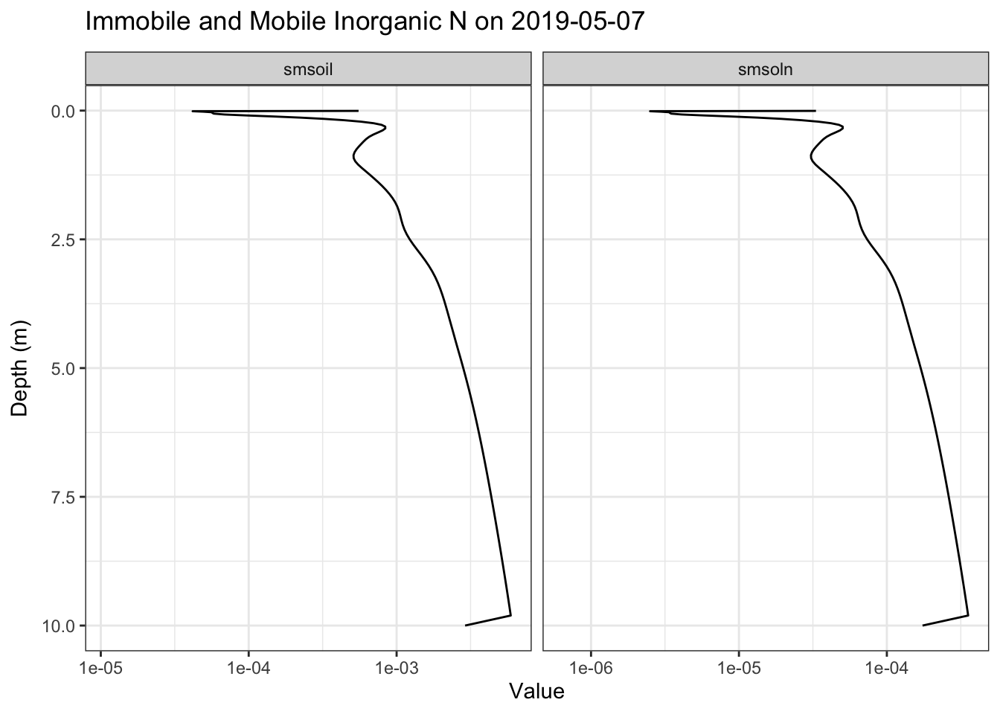

Code
library(tidyverse)
library(lubridate)
library(data.table)
library(gganimate)
# Define soil layer depths (in meters)
layer_depths <- c(
0.00500, 0.01192, 0.02076, 0.03152, 0.04419, 0.05879, 0.07530, 0.09374, 0.11409, 0.13636,
0.16056, 0.18667, 0.21470, 0.24465, 0.27652, 0.31030, 0.34601, 0.38364, 0.42318, 0.46465,
0.50803, 0.55333, 0.60056, 0.64970, 0.70076, 0.75374, 0.80864, 0.86545, 0.92419, 0.98485,
1.04742, 1.11192, 1.17833, 1.24667, 1.31692, 1.38909, 1.46318, 1.53919, 1.61712, 1.69697,
1.77874, 1.86242, 1.94803, 2.03556, 2.12500, 2.21636, 2.30965, 2.40485, 2.50197, 2.60101,
2.70197, 2.80485, 2.90965, 3.01636, 3.12500, 3.23556, 3.34803, 3.46242, 3.57874, 3.69697,
3.81712, 3.93919, 4.06318, 4.18909, 4.31692, 4.44667, 4.57833, 4.71192, 4.84742, 4.98485,
5.12419, 5.26546, 5.40864, 5.55374, 5.70076, 5.84970, 6.00056, 6.15333, 6.30803, 6.46465,
6.62318, 6.78364, 6.94601, 7.11030, 7.27652, 7.44465, 7.61470, 7.78667, 7.96056, 8.13636,
8.31409, 8.49374, 8.67530, 8.85879, 9.04419, 9.23152, 9.42076, 9.61192, 9.80500, 10.00000
)
parse_soil_data <- function(file_path) {
# Read file quickly with data.table
content <- fread(file_path, sep = NULL, header = FALSE, fill = TRUE)[[1]]
# Find all date lines and extract dates
date_lines <- str_which(content, "starting - year/month/day: \\d{4}/\\s?\\d{1,2}/\\s?\\d{1,2}")
dates <- ymd(str_extract(content[date_lines], "\\d{4}/\\s?\\d{1,2}/\\s?\\d{1,2}") %>%
str_replace_all("/", "-"))
# Find all soil data blocks (each block has 3 lines: layer, smsoil, smsoln)
soil_starts <- str_which(content, "^soil layer:")
# Pre-allocate results data.table
result <- data.table(
date = as.Date(rep(NA, length(soil_starts))),
layer = integer(length(soil_starts)),
depth = numeric(length(soil_starts)),
smsoil = numeric(length(soil_starts)),
smsoln = numeric(length(soil_starts))
)
# Map each soil reading to its corresponding date
date_indices <- findInterval(soil_starts, date_lines)
# Process soil data
result[, `:=`(
date = dates[date_indices],
layer = as.integer(str_extract(content[soil_starts], "\\d+")),
depth = layer_depths[as.integer(str_extract(content[soil_starts], "\\d+"))],
smsoil = as.numeric(str_extract(content[soil_starts + 1], "[0-9.E+-]+")),
smsoln = as.numeric(str_extract(content[soil_starts + 2], "[0-9.E+-]+"))
)]
# Remove any NA rows
result <- result[complete.cases(result)]
return(as_tibble(result))
}
# Parse the raw data
soil_data <- parse_soil_data("data/sabr_corn.txt")
# Average the data by date and layer
daily_soil_data <- soil_data %>%
pivot_longer(cols = c(smsoil, smsoln), names_to = "n_type", values_to = "value") %>%
group_by(date, depth, n_type) %>%
summarise(value = mean(value)) %>%
ungroup()
# Plot the smsoln and smsoil profile data and animate it
soil_n_gif <- daily_soil_data %>%
filter(year(date) == 2019) %>%
ggplot(aes(x = value, y = depth)) +
geom_path() +
facet_wrap(~ n_type, ncol = 2, scales = "free_x") +
scale_y_reverse() +
scale_x_log10() +
theme_bw() +
labs(y = "Depth (m)", x = "Value", title = "Immobile and Mobile Inorganic N on {frame_time}") +
transition_time(date) +
ease_aes('linear')
# Save the animation
anim_save("soil_n.gif", animate(soil_n_gif, renderer = gifski_renderer()))
knitr::include_graphics("soil_n.gif")